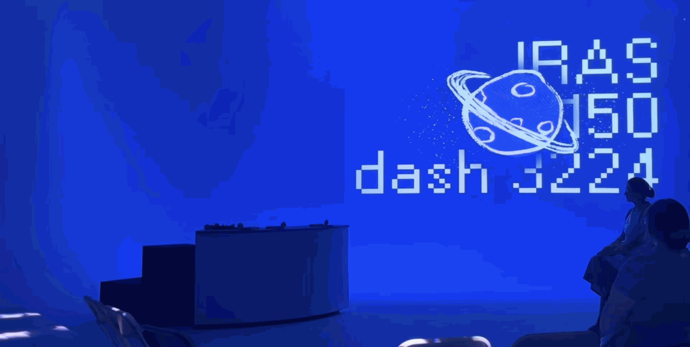
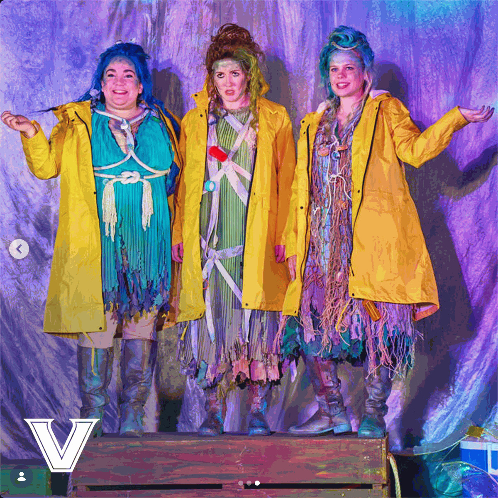

Food Fight I’m Connecticut
I Saw Goody Proctor with the Devil
I’m Connecticut
I Saw Goody Proctor with the Devil

Here Be Sirens
Food Fight
I’m Connecticut
I Saw Goody Proctor with the Devil

Here Be Sirens